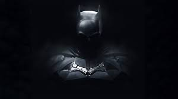
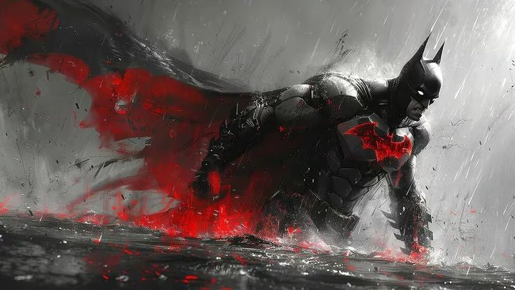
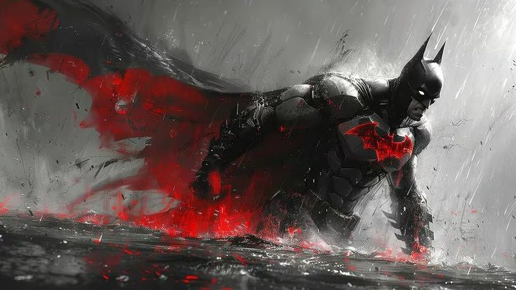
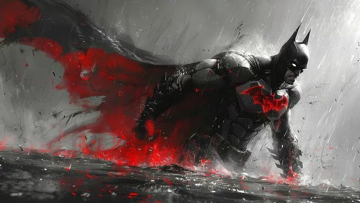

Quem é o Batman?
Batman (Bruce Wayne) é um personagem da DC comics e atua como justiceiro (sem ninguém ter pedido isso a ele) do Gotham. Ele não tem superpoderes: sua força está em treinamento, tecnologia e riqueza (muita riqueza).
Em várias histórias, Gotham representa problemas sociais: desigualdades, corrupção e violência urbana. Alguns quadrinhos usam o Batman como forma de crítica social, mostrando como falhas nas instituições, interesses econômicos e autoritarismo afetam principalmente quem tem menos direitos e oportunidades.
Galeria

 

